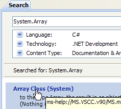
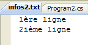

5. Classes .NET d'usage courant
Nous présentons ici quelques classes de la plate-forme .NET fréquemment utilisées. Auparavant, nous montrons comment obtenir des renseignements sur les quelques centaines de classes disponibles. Cette aide est indispensable au dévelopeur C# même confirmé. Le niveau de qualité d'une aide (accès facile, organisation compréhensible, pertinence des informations, ...) peut faire le succès ou l'échec d'un environnement de développement.
5.1. Chercher de l'aide sur les classes .NET
Nous donnons ici quelques indications pour trouver de l'aide avec Visual Studio.NET
5.1.1. Help/Contents
- en [1], prendre l'option Help/Contents du menu.
- en [2], prendre l'option Visual C# Express Edition
- en [3], l'arbre de l'aide sur C#
- en [4], une autre option utile est .NET Framework qui donne accès à toutes les classes du framework .NET.
Faisons le tour des têtes de chapitre de l'aide C# :
- [1] : une vue d'ensemble de C#
- [2] : une série d'exemples sur certains points de C#
- [3] : un cours C# - pourrait remplacer avantageusement le présent document…
- [4] : pour aller dans les détails de C#
- [5] : utile pour les développeurs C++ ou Java. Permet d'éviter quelques pièges.
- [6] : lorsque vous cherchez des exemples, vous pouvez commencer par là.
- [7] : ce qu'il faut savoir pour créer des interfaces graphiques
- [8] : pour mieux utiliser l'IDE Visual Studio Express
- [9] : SQL Server Express 2005 est un SGBD de qualité distribué gratuitement. Nous l'utiliserons dans ce cours.
L'aide C# n'est qu'une partie de ce dont a besoin le développeur. L'autre partie est l'aide sur les centaines de classes du framework .NET qui vont lui faciliter son travail.
- [1] : on sélectionne l'aide sur le framework .NET
- [2] : l'aide se trouve dans la branche .NET Framework SDK
- [3] : la branche .NET Framework Class Library présente toutes les classes .NET selon l'espace de noms auquel elles appartiennent
- [4] : l'espace de noms System qui a été le plus souvent utilisé dans les exemples des chapitres précédents
- [5] : dans l'espace de noms System, un exemple, ici la structure DateTime
- [6] : l'aide sur la structure DateTime
5.1.2. Help/Index/Search
L'aide fournie par MSDN est immense et on peut ne pas savoir où chercher. On peut alors utiliser l'index de l'aide :
- en [1], utiliser l'option [Help/Index] si la fenêtre d'aide n'est pas déjà ouverte, sinon utiliser [2] dans une fenêtre d'aide existante.
- en [3], préciser le domaine dans lequel doit se faire la recherche
- en [4], préciser ce que vous cherchez, ici une classe
- en [5], la réponse
Une autre façon de chercher de l'aide est d'utiliser la fonction search de l'aide :
- en [1], utiliser l'option [Help/Search] si la fenêtre d'aide n'est pas déjà ouverte, sinon utiliser [2] dans une fenêtre d'aide existante.
- en [3], préciser ce qui est cherché
- en [4], filtrer les domaines de recherche
- en [5], la réponse sous forme de différents thèmes où le texte cherché a été trouvé.
5.2. Les chaînes de caractères
5.2.1. La classe System.String
La classe System.String est identique au type simple string. Elle présente de nombreuses propriétés et méthodes. En voici quelques-unes :
public int Length { get; }
| nombre de caractères de la chaîne
|
public bool EndsWith(string value)
| rend vrai si la chaîne se termine par value
|
public bool StartsWith(string value)
| rend vrai si la chaîne commence par value
|
public virtual bool Equals(object obj)
| rend vrai si la chaînes est égale à obj - équivalent chaîne==obj
|
public int IndexOf(string value, int startIndex)
| rend la première position dans la chaîne de la chaîne value - la recherche commence à partir du caractère n° startIndex
|
public int IndexOf(char value, int startIndex)
| idem mais pour le caractère value
|
public string Insert(int startIndex, string value)
| insère la chaîne value dans chaîne en position startIndex
|
public static string Join(string separator, string[] value)
| méthode de classe - rend une chaîne de caractères, résultat de la concaténation des valeurs du tableau value avec le séparateur separator
|
public int LastIndexOf(char value, int startIndex, int count)
public int LastIndexOf(string value, int startIndex, int count)
| idem indexOf mais rend la dernière position au lieu de la première
|
public string Replace(char oldChar, char newChar)
| rend une chaîne copie de la chaîne courante où le caractère oldChar a été remplacé par le caractère newChar
|
public string[] Split(char[] separator)
| la chaîne est vue comme une suite de champs séparés par les caractères présents dans le tableau separator. Le résultat est le tableau de ces champs
|
public string Substring(int startIndex, int length)
| sous-chaîne de la chaîne courante commençant à la position startIndex et ayant length caractères
|
public string ToLower()
| rend la chaîne courante en minuscules
|
public string ToUpper()
| rend la chaîne courante en majuscules
|
public string Trim()
| rend la chaîne courante débarrassée de ses espaces de début et fin
|
On notera un point important : lorsqu'une méthode rend une chaîne de caractères, celle-ci est une chaîne différente de la chaîne sur laquelle a été appliquée la méthode. Ainsi S1.Trim() rend une chaîne S2, et S1 et S2 sont deux chaînes différentes.
Une chaîne C peut être considérée comme un tableau de caractères. Ainsi
- C[i] est le caractère i de C
- C.Length est le nombre de caractères de C
Considérons l'exemple suivant :
| using System;
namespace Chap3 {
class Program {
static void Main(string[] args) {
string uneChaine = "l'oiseau vole au-dessus des nuages";
affiche("uneChaine=" + uneChaine);
affiche("uneChaine.Length=" + uneChaine.Length);
affiche("chaine[10]=" + uneChaine[10]);
affiche("uneChaine.IndexOf(\"vole\")=" + uneChaine.IndexOf("vole"));
affiche("uneChaine.IndexOf(\"x\")=" + uneChaine.IndexOf("x"));
affiche("uneChaine.LastIndexOf('a')=" + uneChaine.LastIndexOf('a'));
affiche("uneChaine.LastIndexOf('x')=" + uneChaine.LastIndexOf('x'));
affiche("uneChaine.Substring(4,7)=" + uneChaine.Substring(4, 7));
affiche("uneChaine.ToUpper()=" + uneChaine.ToUpper());
affiche("uneChaine.ToLower()=" + uneChaine.ToLower());
affiche("uneChaine.Replace('a','A')=" + uneChaine.Replace('a', 'A'));
string[] champs = uneChaine.Split(null);
for (int i = 0; i < champs.Length; i++) {
affiche("champs[" + i + "]=[" + champs[i] + "]");
}//for
affiche("Join(\":\",champs)=" + System.String.Join(":", champs));
affiche("(\" abc \").Trim()=[" + " abc ".Trim() + "]");
}//Main
public static void affiche(string msg) {
// affiche msg
Console.WriteLine(msg);
}//affiche
}//classe
}//namespace
|
L'exécution donne les résultats suivants :
| uneChaine=l'oiseau vole au-dessus des nuages
uneChaine.Length=34
chaine[10]=o
uneChaine.IndexOf("vole")=9
uneChaine.IndexOf("x")=-1
uneChaine.LastIndexOf('a')=30
uneChaine.LastIndexOf('x')=-1
uneChaine.Substring(4,7)=seau vo
uneChaine.ToUpper()=L'OISEAU VOLE AU-DESSUS DES NUAGES
uneChaine.ToLower()=l'oiseau vole au-dessus des nuages
uneChaine.Replace('a','A')=l'oiseAu vole Au-dessus des nuAges
champs[0]=[l'oiseau]
champs[1]=[vole]
champs[2]=[au-dessus]
champs[3]=[des]
champs[4]=[nuages]
Join(":",champs)=l'oiseau:vole:au-dessus:des:nuages
(" abc ").Trim()=[abc]
|
Considérons un nouvel exemple :
| using System;
namespace Chap3 {
class Program {
static void Main(string[] args) {
// la ligne à analyser
string ligne = "un:deux::trois:";
// les séparateurs de champs
char[] séparateurs = new char[] { ':' };
// split
string[] champs = ligne.Split(séparateurs);
for (int i = 0; i < champs.Length; i++) {
Console.WriteLine("Champs[" + i + "]=" + champs[i]);
}
// join
Console.WriteLine("join=[" + System.String.Join(":", champs) + "]");
}
}
}
|
et les résultats d'exécution :
| Champs[0]=un
Champs[1]=deux
Champs[2]=
Champs[3]=trois
Champs[4]=
join=[un:deux::trois:]
|
La méthode Split de la classe String permet de mettre dans un tableau des éléments d'une chaîne de caractères. La définition de la méthode Split utilisée ici est la suivante :
| public string[] Split(char[] separator);
|
separator
| tableau de caractères. Ces caractères représentent les caractères utilisés pour séparer les champs de la chaîne de caractères. Ainsi si la chaîne est "champ1, champ2, champ3" on pourra utiliser separator=new char[] {','}. Si le séparateur est une suite d'espaces on utilisera separator=null. |
résultat
| tableau de chaînes de caractères où chaque élément du tableau est un champ de la chaîne. |
La méthode Join est une méthode statique de la classe String :
| public static string Join(string separator, string[] value);
|
value
| tableau de chaînes de caractères |
separator
| une chaîne de caractères qui servira de séparateur de champs |
résultat
| une chaîne de caractères formée de la concaténation des éléments du tableau value séparés par la chaîne separator. |
5.2.2. La classe System.Text.StringBuilder
Précédemment, nous avons dit que les méthodes de la classe String qui s'appliquaient à une chaîne de caractères S1 rendait une autre chaîne S2. La classe System.Text.StringBuilder permet de manipuler S1 sans avoir à créer une chaîne S2. Cela améliore les performances en évitant la multiplication de chaînes à durée de vie très limitée.
La classe admet divers constructeurs :
StringBuilder()
| constructeur par défaut
|
StringBuilder(String value)
| construction et initialisation avec value
|
StringBuilder(String value, int capacité)
| construction et initialisation avec value avec une taille de bloc de capacité caractères.
|
Un objet StringBuilder travaille avec des blocs de capacité caractères pour stocker la chaîne sous-jacente. Par défaut capacité vaut 16. Le 3ième constructeur ci-dessus permet de préciser la capacité des blocs. Le nombre de blocs de capacité caractères nécessaire pour stocker une chaîne S est ajusté automatiquement par la classe StringBuilder. Il existe des constructeurs pour fixer le nombre maximal de caractères dans un objet StringBuilder. Par défaut, cette capacité maximale est 2 147 483 647.
Voici un exemple illustrant cette notion de capacité :
| using System.Text;
using System;
namespace Chap3 {
class Program {
static void Main(string[] args) {
// str
StringBuilder str = new StringBuilder("test");
Console.WriteLine("taille={0}, capacité={1}", str.Length, str.Capacity);
for (int i = 0; i < 10; i++) {
str.Append("test");
Console.WriteLine("taille={0}, capacité={1}", str.Length, str.Capacity);
}
// str2
StringBuilder str2 = new StringBuilder("test",10);
Console.WriteLine("taille={0}, capacité={1}", str2.Length, str2.Capacity);
for (int i = 0; i < 10; i++) {
str2.Append("test");
Console.WriteLine("taille={0}, capacité={1}", str2.Length, str2.Capacity);
}
}
}
}
|
- ligne 7 : création d'un objet StringBuilder avec une taille de bloc de 16 caractères
- ligne 8 : str.Length est le nombre actuel de caractères de la chaîne str. str.Capacity est le nombre de caractères que peut stocker la chaîne str actuelle avant réallocation d'un nouveau bloc.
- ligne 10 : str.Append(String S) permet de concaténer la chaîne S de type String à la chaîne str de type StringBuilder.
- ligne 14 : création d'un objet StringBuilder avec une capacité de bloc de 10 caractères
Le résultat de l'exécution :
| taille=4, capacité=16
taille=8, capacité=16
taille=12, capacité=16
taille=16, capacité=16
taille=20, capacité=32
taille=24, capacité=32
taille=28, capacité=32
taille=32, capacité=32
taille=36, capacité=64
taille=40, capacité=64
taille=44, capacité=64
taille=4, capacité=10
taille=8, capacité=10
taille=12, capacité=20
taille=16, capacité=20
taille=20, capacité=20
taille=24, capacité=40
taille=28, capacité=40
taille=32, capacité=40
taille=36, capacité=40
taille=40, capacité=40
taille=44, capacité=80
|
Ces résultats montrent que la classe suit un algorithme qui lui est propre pour allouer de nouveaux blocs lorsque sa capacité est insuffisante :
- lignes 4-5 : augmentation de la capacité de 16 caractères
- lignes 8-9 : augmentation de la capacité de 32 caractères alors que 16 auraient suffi.
Voici quelques-unes des méthodes de la classe :
public StringBuilder Append(string value)
| ajoute la chaîne value à l'objet StringBuilder. Rend l'objet StringBuilder. Cette méthode est surchargée pour admettre différents types pour value : byte, int, float, double, decimal, ...
|
public StringBuilder Insert(int index, string value)
| insère value à la position index. Cette méthode est surchargée comme la précédente pour accepter différents types pour value.
|
public StringBuilder Remove(int index, int length)
| supprime length caractères à partir de la position index.
|
public StringBuilder Replace(string oldValue, string newValue)
| remplace dans StringBuilder, la chaîne oldValue par la chaîne newValue. Il existe une version surchargée (char oldChar, char newChar).
|
public String ToString()
| convertit l'objet StringBuilder en un objet de type String.
|
Voici un exemple :
| using System.Text;
using System;
namespace Chap3 {
class Program {
static void Main(string[] args) {
// str3
StringBuilder str3 = new StringBuilder("test");
Console.WriteLine(str3.Append("abCD").Insert(2, "xyZT").Remove(0, 2).Replace("xy", "XY"));
}
}
}
|
et ses résultats :
5.3. Les tableaux
Les tableaux dérivent de la classe Array :
 |  |  |
La classe Array possède diverses méthodes pour trier un tableau, rechercher un élément dans un tableau, redimensionner un tableau, ... Nous présentons certaines propriétés et méthodes de cette classe. Elles sont quasiment toutes surchargées, c.a.d. qu'elles existent en différentes variantes. Tout tableau en hérite.
Propriétés
public int Length {get;}
| nombre total d'éléments du tableau, quelque soit son nombre de dimensions
|
public int Rank {get;}
| nombre total de dimensions du tableau
|
Méthodes
public static int BinarySearch<T>(T[] tableau,T value)
| rend la position de value dans tableau.
|
public static int BinarySearch<T>(T[] tableau,int index, int length, T value)
| idem mais cherche dans tableau à partir de la position index et sur length éléments
|
public static void Clear(Array tableau, int index, int length)
| met les length éléments de tableau commençant au n° index à 0 si numériques, false si booléens, null si références
|
public static void Copy(Array source, Array destination, int length)
| copie length éléments de source dans destination
|
public int GetLength(int i)
| nombre d'éléments de la dimension n° i du tableau
|
public int GetLowerBound(int i)
| indice du 1er élément de la dimension n° i
|
public int GetUpperBound(int i)
| indice du dernier élément de la dimension n° i
|
public static int IndexOf<T>(T[] tableau, T valeur)
| rend la position de valeur dans tableau ou -1 si valeur n'est pas trouvée.
|
public static void Resize<T>(ref T[] tableau, int n)
| redimensionne tableau à n éléments. Les éléments déjà présents sont conservés.
|
public static void Sort<T>(T[] tableau, IComparer<T> comparateur)
| trie tableau selon un ordre défini par comparateur. Cette méthode a été présentée page 83.
|
Le programme suivant illustre l'utilisation de certaines méthodes de la classe Array :
| using System;
namespace Chap3 {
class Program {
// type de recherche
enum TypeRecherche { linéaire, dichotomique };
// méthode principale
static void Main(string[] args) {
// lecture des éléments d'un tableau tapés au clavier
double[] éléments;
Saisie(out éléments);
// affichage tableau non trié
Affiche("Tableau non trié", éléments);
// Recherche linéaire dans le tableau non trié
Recherche(éléments, TypeRecherche.linéaire);
// tri du tableau
Array.Sort(éléments);
// affichage tableau trié
Affiche("Tableau trié", éléments);
// Recherche dichotomique dans le tableau trié
Recherche(éléments, TypeRecherche.dichotomique);
}
// saisie des valeurs du tableau éléments
// éléments : référence sur tableau créé par la méthode
static void Saisie(out double[] éléments) {
bool terminé = false;
string réponse;
bool erreur;
double élément = 0;
int i = 0;
// au départ, le tableau n'existe pas
éléments = null;
// boucle de saisie des éléments du tableau
while (!terminé) {
// question
Console.Write("Elément (réel) " + i + " du tableau (rien pour terminer) : ");
// lecture de la réponse
réponse = Console.ReadLine().Trim();
// fin de saisie si chaîne vide
if (réponse.Equals(""))
break;
// vérification saisie
try {
élément = Double.Parse(réponse);
erreur = false;
} catch {
Console.Error.WriteLine("Saisie incorrecte, recommencez");
erreur = true;
}//try-catch
// si pas d'erreur
if (!erreur) {
// un élément de plus dans le tableau
i += 1;
// redimensionnement tableau pour accueillir le nouvel élément
Array.Resize(ref éléments, i);
// insertion nouvel élément
éléments[i - 1] = élément;
}
}//while
}
// méthode générique pour afficher les éléments d'un tableau
static void Affiche<T>(string texte, T[] éléments) {
Console.WriteLine(texte.PadRight(50, '-'));
foreach (T élément in éléments) {
Console.WriteLine(élément);
}
}
// recherche d'un élément dans le tableau
// éléments : tableau de réels
// TypeRecherche : dichotomique ou linéaire
static void Recherche(double[] éléments, TypeRecherche type) {
// Recherche
bool terminé = false;
string réponse = null;
double élément = 0;
bool erreur = false;
int i = 0;
while (!terminé) {
// question
Console.WriteLine("Elément cherché (rien pour arrêter) : ");
// lecture-vérification réponse
réponse = Console.ReadLine().Trim();
// fini ?
if (réponse.Equals(""))
break;
// vérification
try {
élément = Double.Parse(réponse);
erreur = false;
} catch {
Console.WriteLine("Erreur, recommencez...");
erreur = true;
}//try-catch
// si pas d'erreur
if (!erreur) {
// on cherche l'élément dans le tableau
if (type == TypeRecherche.dichotomique)
// recherche dichotomique
i = Array.BinarySearch(éléments, élément);
else
// recherche linéaire
i = Array.IndexOf(éléments, élément);
// Affichage réponse
if (i >= 0)
Console.WriteLine("Trouvé en position " + i);
else
Console.WriteLine("Pas dans le tableau");
}//if
}//while
}
}
}
|
- lignes 27-62 : la méthode Saisie saisit les éléments d'un tableau éléments tapés au clavier. Comme on ne peut dimensionner le tableau à priori (on ne connaît pas sa taille finale), on est obligés de le redimensionner à chaque nouvel élément (ligne 57). Un algorithme plus efficace aurait été d'allouer de la place au tableau par groupe de N éléments. Un tableau n'est cependant pas fait pour être redimensionné . Ce cas là est mieux traité avec une liste (ArrayList, List<T>).
- lignes 75-113 : la méthode Recherche permet de rechercher dans le tabeau éléments, un élément tapé au clavier. Le mode de recherche est différent selon que le tableau est trié ou non. Pour un tableau non trié, on fait une recherche linéaire avec la méthode IndexOf de la ligne 106. Pour un tableau trié, on fait une recherche dichotomique avec la méthode BinarySearch de la ligne 103.
- ligne 18 : on trie le tableau éléments. On utilise ici, une variante de Sort qui n'a qu'un paramètre : le tableau à trier. La relation d'ordre utilisée pour comparer les éléments du tableau est alors celle implicite de ces éléments. Ici, les éléments sont numériques. C'est l'ordre naturel des nombres qui est utilisé.
Les résultats écran sont les suivants :
| Elément (réel) 0 du tableau (rien pour terminer) : 3,6
Elément (réel) 1 du tableau (rien pour terminer) : 7,4
Elément (réel) 2 du tableau (rien pour terminer) : -1,5
Elément (réel) 3 du tableau (rien pour terminer) : -7
Elément (réel) 4 du tableau (rien pour terminer) :
Tableau non trié----------------------------------
3,6
7,4
-1,5
-7
Elément cherché (rien pour arrêter) :
7,4
Trouvé en position 1
Elément cherché (rien pour arrêter) :
0
Pas dans le tableau
Elément cherché (rien pour arrêter) :
Tableau trié--------------------------------------
-7
-1,5
3,6
7,4
Elément cherché (rien pour arrêter) :
7,4
Trouvé en position 3
Elément cherché (rien pour arrêter) :
0
Pas dans le tableau
Elément cherché (rien pour arrêter) :
|
5.4. Les collections génériques
Outre le tableau, il existe diverses classes pour stocker des collections d'éléments. Il existe des versions génériques dans l'espace de noms System.Collections.Generic et des versions non génériques dans System.Collections. Nous présenterons deux collections génériques fréquemment utilisées : la liste et le dictionnaire.
La liste des collections génériques est la suivante :

5.4.1. La classe générique List<T>
La classe System.Collections.Generic.List<T> permet d'implémenter des collections d'objets de type T dont la taille varie au cours de l'exécution du programme. Un objet de type List<T> se manipule presque comme un tableau. Ainsi l'élément i d'une liste l est-il noté l[i].
Il existe également un type de liste non générique : ArrayList capable de stocker des références sur des objets quelconques. ArrayList est fonctionnellement équivalente à List<Object>. Un objet ArrayList ressemble à ceci :
Ci-dessus, les éléments 0, 1 et i de la liste pointent sur des objets de types différents. Il faut qu'un objet soit d'abord créé avant d'ajouter sa référence à la liste ArrayList. Bien qu'un ArrayList stocke des références d'objet, il est possible d'y stocker des nombres. Cela se fait par un mécanisme appelé Boxing : le nombre est encapsulé dans un objet O de type Object et c'est la référence O qui est stocké dans la liste. C'est un mécanisme transparent pour le développeur. On peut ainsi écrire :
| ArrayList liste=new ArrayList();
liste.Add(4);
|
Cela produira le résultat suivant :
Ci-dessus, le nombre 4 a été encapsulé dans un objet O et la référence O est mémorisée dans la liste. Pour le récupérer, on pourra écrire :
L'opération Object -> int est appelée Unboxing. Si une liste est entièrement composée de types int, la déclarer comme List<int> améliore les performances. En effet, les nombres de type int sont alors stockés dans la liste elle-même et non dans des types Object extérieurs à la liste. Les opérations Boxing / Unboxing n'ont plus lieu.
Pour un objet List<T> ou T est une classe, la liste stocke là encore les références des objets de type T :
Voici quelques-unes des propriétés et méthodes des listes génériques :
Propriétés
public int Count {get;}
| nombre d'éléments de la liste
|
public int Capacity {get;}
| nombre d'éléments que la liste peut contenir avant d'être redimensionnée. Ce redimensionnement se fait automatiquement. Cette notion de capacité de liste est analogue à celle de capacité décrite pour la classe StringBuilder page 99.
|
Méthodes
public void Add(T item)
| ajoute item à la liste
|
public int BinarySearch<T>(T item)
| rend la position de item dans la liste s'il s'y trouve sinon un nombre <0
|
public int BinarySearch<T>(T item, IComparer<T> comparateur)
| idem mais le 2ième paramètre permet de comparer deux éléments de la liste. L'interface IComparer<T> a été présentée page 83.
|
public void Clear()
| supprime tous les éléments de la liste
|
public bool Contains(T item)
| rend True si item est dans la liste, False sinon
|
public void CopyTo(T[] tableau)
| copie les éléments de la liste dans tableau.
|
public int IndexOf(T item)
| rend la position de item dans tableau ou -1 si valeur n'est pas trouvée.
|
public void Insert(T item, int index)
| insère item à la position index de la liste
|
public bool Remove(T item)
| supprime item de la liste. Rend True si l'opération réussit, False sinon.
|
public void RemoveAt(int index)
| supprime l'élément n° index de la liste
|
public void Sort(IComparer<T> comparateur)
| trie la liste selon un ordre défini par comparateur. Cette méthode a été présentée page 83.
|
public void Sort()
| trie la liste selon l'ordre défini par le type des éléments de la liste
|
public T[] ToArray()
| rend les éléments de la liste sous forme de tableau
|
Reprenons l'exemple traité précédemment avec un objet de type Array et traitons-le maintenant avec un objet de type List<T>. Parce que la liste est un objet proche du tableau, le code change peu. Nous ne présentons que les modifications notables :
| using System;
using System.Collections.Generic;
namespace Chap3 {
class Program {
// type de recherche
enum TypeRecherche { linéaire, dichotomique };
// méthode principale
static void Main(string[] args) {
// lecture des éléments d'une liste tapés au clavier
List<double> éléments;
Saisie(out éléments);
// nombre d'éléments
Console.WriteLine("La liste a {0} éléments et une capacité de {1} éléments", éléments.Count, éléments.Capacity);
// affichage liste non triée
Affiche("Liste non triée", éléments);
// Recherche linéaire dans la liste non triée
Recherche(éléments, TypeRecherche.linéaire);
// tri de la liste
éléments.Sort();
// affichage liste triée
Affiche("Liste triée", éléments);
// Recherche dichotomique dans la liste triée
Recherche(éléments, TypeRecherche.dichotomique);
}
// saisie des valeurs de la liste éléments
// éléments : référence sur la liste créée par la méthode
static void Saisie(out List<double> éléments) {
...
// au départ, la liste est vide
éléments = new List<double>();
// boucle de saisie des éléments de la liste
while (!terminé) {
...
// si pas d'erreur
if (!erreur) {
// un élément de plus dans la liste
éléments.Add(élément);
}
}//while
}
// méthode générique pour afficher les éléments d'un objet énumérable
static void Affiche<T>(string texte, IEnumerable<T> éléments) {
Console.WriteLine(texte.PadRight(50, '-'));
foreach (T élément in éléments) {
Console.WriteLine(élément);
}
}
// recherche d'un élément dans la liste
// éléments : liste de réels
// TypeRecherche : dichotomique ou linéaire
static void Recherche(List<double> éléments, TypeRecherche type) {
...
while (!terminé) {
...
// si pas d'erreur
if (!erreur) {
// on cherche l'élément dans la liste
if (type == TypeRecherche.dichotomique)
// recherche dichotomique
i = éléments.BinarySearch(élément);
else
// recherche linéaire
i = éléments.IndexOf(élément);
// Affichage réponse
...
}//if
}//while
}
}
}
|
- lignes 46-51 : la méthode générique Affiche<T> admet deux paramètres :
- le 1er paramètre est un texte à écrire
- le 2ième paramètre est un objet implémentant l'interface générique IEnumerable<T> :
| public interface IEnumerable<T>{
IEnumerator GetEnumerator();
IEnumerator<T> GetEnumerator();
}
|
La structure foreach( T élément in éléments) de la ligne 48, est valide pour tout objet éléments implémentant l'interface IEnumerable. Les tableaux (Array) et les listes (List<T>) implémentent l'interface IEnumerable<T>. Aussi la méthode Affiche convient-elle aussi bien pour afficher des tableaux que des listes.
Les résultats d'exécution du programme sont les mêmes que dans l'exemple utilisant la classe Array.
5.4.2. La classe Dictionary<TKey,TValue>
La classe System.Collections.Generic.Dictionary<TKey,TValue> permet d'implémenter un dictionnaire. On peut voir un dictionnaire comme un tableau à deux colonnes :
clé | valeur |
clé1 | valeur1 |
clé2 | valeur2 |
.. | ... |
Dans la classe Dictionary<TKey,TValue> les clés sont de type Tkey, les valeurs de type TValue. Les clés sont uniques, c.a.d. qu'il ne peut y avoir deux clés identiques. Un tel dictionnaire pourrait ressembler à ceci si les types TKey et TValue désignaient des classes :
La valeur associée à la clé C d'un dictionnaire D est obtenue par la notation D[C]. Cette valeur est en lecture et écriture. Ainsi on peut écrire :
| TValue v=...;
TKey c=...;
Dictionary<TKey,TValue> D=new Dictionary<TKey,TValue>();
D[c]=v;
v=D[c];
|
Si la clé c n'existe pas dans le dictionnaire D, la notation D[c] lance une exception.
Les méthodes et propriétés principales de la classe Dictionary<TKey,TValue> sont les suivantes :
Constructeurs
public Dictionary<TKey,TValue>()
| constructeur sans paramètres - construit un dictionnaire vide. Il existe plusieurs autres constructeurs.
|
Propriétés
public int Count {get;}
| nombre d'entrées (clé, valeur) dans le dictionnaire
|
public Dictionary<TKey,TValue>.KeyCollection Keys {get;}
| collection des clés du dictionnaire.
|
public Dictionary<TKey,TValue>.ValueCollection Values {get;}
| collection des valeurs du dictionnaire.
|
Méthodes
public void Add(TKey key, TValue value)
| ajoute le couple (key, value) au dictionnaire
|
public void Clear()
| supprime tous les couples du dictionnaire
|
public bool ContainsKey (TKey key)
| rend True si key est une clé du dictionnaire, False sinon
|
public bool ContainsValue (TValue value)
| rend True si value est une valeur du dictionnaire, False sinon
|
public void CopyTo(T[] tableau)
| copie les éléments de la liste dans tableau.
|
public bool Remove(TKey key)
| supprime du dictionnaire le couple de clé key. Rend True si l'opération réussit, False sinon.
|
public bool TryGetValue(TKey key,out TValue value)
| rend dans value, la valeur associée à la clé key si cette dernière existe, sinon rend la valeur par défaut du type TValue (0 pour les nombres, false pour les booléens, null pour les références d'objet)
|
Considérons le programme exemple suivant :
| using System;
using System.Collections.Generic;
namespace Chap3 {
class Program {
static void Main(string[] args) {
// création d'un dictionnaire <string,int>
string[] liste = { "jean:20", "paul:18", "mélanie:10", "violette:15" };
string[] champs = null;
char[] séparateurs = new char[] { ':' };
Dictionary<string,int> dico = new Dictionary<string,int>();
for (int i = 0; i <liste.Length; i++) {
champs = liste[i].Split(séparateurs);
dico[champs[0]]= int.Parse(champs[1]);
}//for
// nbre d'éléments dans le dictionnaire
Console.WriteLine("Le dictionnaire a " + dico.Count + " éléments");
// liste des clés
Affiche("[Liste des clés]",dico.Keys);
// liste des valeurs
Affiche("[Liste des valeurs]", dico.Values);
// liste des clés & valeurs
Console.WriteLine("[Liste des clés & valeurs]");
foreach (string clé in dico.Keys) {
Console.WriteLine("clé=" + clé + " valeur=" + dico[clé]);
}
// on supprime la clé "paul"
Console.WriteLine("[Suppression d'une clé]");
dico.Remove("paul");
// liste des clés & valeurs
Console.WriteLine("[Liste des clés & valeurs]");
foreach (string clé in dico.Keys) {
Console.WriteLine("clé=" + clé + " valeur=" + dico[clé]);
}
// recherche dans le dictionnaire
String nomCherché = null;
Console.Write("Nom recherché (rien pour arrêter) : ");
nomCherché = Console.ReadLine().Trim();
int value;
while (!nomCherché.Equals("")) {
dico.TryGetValue(nomCherché, out value);
if (value!=0) {
Console.WriteLine(nomCherché + "," + value);
} else {
Console.WriteLine("Nom " + nomCherché + " inconnu");
}
// recherche suivante
Console.Out.Write("Nom recherché (rien pour arrêter) : ");
nomCherché = Console.ReadLine().Trim();
}//while
}
// méthode générique pour afficher les éléments d'un type énumérable
static void Affiche<T>(string texte, IEnumerable<T> éléments) {
Console.WriteLine(texte.PadRight(50, '-'));
foreach (T élément in éléments) {
Console.WriteLine(élément);
}
}
}
}
|
- ligne 8 : un tableau de string qui va servir à initialiser le dictionnaire <string,int>
- ligne 11 : le dictionnaire <string,int>
- lignes 12-15 : son initialisation à partir du tableau de string de la ligne 8
- ligne 17 : nombre d'entrées du dictionnaire
- ligne 19 : les clés du dictionnaire
- ligne 21 : les valeurs du dictionnaire
- ligne 29 : suppression d'une entrée du dictionnaire
- ligne 41 : recherche d'une clé dans le dictionnaire. Si elle n'existe pas, la méthode TryGetValue mettra 0 dans value, car value est de type numérique. Cette technique n'est utilisable ici que parce qu'on sait que la valeur 0 n'est pas dans le dictionnaire.
Les résultats d'exécution sont les suivants :
| Le dictionnaire a 4 éléments
[Liste des clés]----------------------------------
jean
paul
mélanie
violette
[Liste des valeurs]-------------------------------
20
18
10
15
[Liste des clés & valeurs]
clé=jean valeur=20
clé=paul valeur=18
clé=mélanie valeur=10
clé=violette valeur=15
[Suppression d'une clé]
[Liste des clés & valeurs]
clé=jean valeur=20
clé=mélanie valeur=10
clé=violette valeur=15
Nom recherché (rien pour arrêter) : violette
violette,15
Nom recherché (rien pour arrêter) : x
Nom x inconnu
|
5.5. Les fichiers texte
5.5.1. La classe StreamReader
La classe System.IO.StreamReader permet de lire le contenu d'un fichier texte. Elle est en fait capable d'exploiter des flux qui ne sont pas des fichiers. Voici quelques-unes de ses propriétés et méthodes :
Constructeurs
public StreamReader(string path)
| construit un flux de lecture à partir du fichier de chemin path. Le contenu du fichier peut être encodé de diverses façons. Il existe un constructeur qui permet de préciser le codage utilisé. Par défaut, c'est le codage UTF-8 qui est utilisé.
|
Propriétés
public bool EndOfStream {get;}
| True si le flux a été lu entièrement
|
Méthodes
public void Close()
| ferme le flux et libère les ressources allouées pour sa gestion. A faire obligatoirement après exploitation du flux.
|
public override int Peek()
| rend le caractère suivant du flux sans le consommer. Un Peek supplémentaire rendrait donc le même caractère.
|
public override int Read()
| rend le caractère suivant du flux et avance d'un caractère dans le flux.
|
public override int Read(char[] buffer, int index, int count)
| lit count caractères dans le flux et les met dans buffer à partir de la position index. Rend le nombre de caractères lus - peut être 0.
|
public override string ReadLine()
| rend la ligne suivante du flux ou null si on était à la fin du flux.
|
public override string ReadToEnd()
| rend la fin du flux ou "" si on était à la fin du flux.
|
Voici un exemple :
| using System;
using System.IO;
namespace Chap3 {
class Program {
static void Main(string[] args) {
// répertoire d'exécution
Console.WriteLine("Répertoire d'exécution : "+Environment.CurrentDirectory);
string ligne = null;
StreamReader fluxInfos = null;
// lecture contenu du fichier infos.txt
try {
// lecture 1
Console.WriteLine("Lecture 1----------------");
using (fluxInfos = new StreamReader("infos.txt")) {
ligne = fluxInfos.ReadLine();
while (ligne != null) {
Console.WriteLine(ligne);
ligne = fluxInfos.ReadLine();
}
}
// lecture 2
Console.WriteLine("Lecture 2----------------");
using (fluxInfos = new StreamReader("infos.txt")) {
Console.WriteLine(fluxInfos.ReadToEnd());
}
} catch (Exception e) {
Console.WriteLine("L'erreur suivante s'est produite : " + e.Message);
}
}
}
}
|
- ligne 8 : affiche le nom du répertoire d'exécution
- lignes 12, 27 : un try / catch pour gérer une éventuelle exception.
- ligne 15 : la structure using flux=new StreamReader(...) est une facilité pour ne pas avoir à fermer explicitement le flux après son exploitation. Cette fermeture est faite automatiquement dès qu'on sort de la portée du using.
- ligne 15 : le fichier lu s'appelle infos.txt. Comme c'est un nom relatif, il sera cherché dans le répertoire d'exécution affiché par la ligne 8. S'il n'y est pas, une exception sera lancée et gérée par le try / catch.
- lignes 16-20 : le fichier est lu par lignes successives
- ligne 25 : le fichier est lu d'un seul coup
Le fichier infos.txt est le suivant :
| 12620:0:0
13190:0,05:631
15640:0,1:1290,5
|
et placé dans le dossier suivant du projet C# :
On va découvrir que bin/Release est le dossier d'exécution lorsque le projet est excécuté par Ctrl-F5.
L'exécution donne les résultats suivants :
| Répertoire d'exécution : C:\data\2007-2008\c# 2008\poly\Chap3\07\bin\Release
Lecture 1----------------
12620:0:0
13190:0,05:631
15640:0,1:1290,5
Lecture 2----------------
12620:0:0
13190:0,05:631
15640:0,1:1290,5
|
Si ligne 15, on met le nom de fichier xx.txt on a les résultats suivants :
| Répertoire d'exécution : C:\data\2007-2008\c# 2008\poly\Chap3\07\bin\Release
Lecture 1----------------
L'erreur suivante s'est produite : Could not find file 'C:\...\Chap3\07\bin\Release\xx.txt'.
|
5.5.2. La classe StreamWriter
La classe System.IO.StreamReader permet d'écrire dans un fichier texte. Comme la classe StreamReader, elle est en fait capable d'exploiter des flux qui ne sont pas des fichiers. Voici quelques-unes de ses propriétés et méthodes :
Constructeurs
public StreamWriter(string path)
| construit un flux d'écriture dans le fichier de chemin path. Le contenu du fichier peut être encodé de diverses façons. Il existe un constructeur qui permet de préciser le codage utilisé. Par défaut, c'est le codage UTF-8 qui est utilisé.
|
Propriétés
public virtual bool AutoFlush
{get;set;}
| fixe le mode d'écriture dans le fichier du buffer associé au flux. Si égal à False, l'écriture dans le flux n'est pas immédiate : il y a d'abord écriture dans une mémoire tampon puis dans le fichier lorsque la mémoire tampon est pleine sinon l'écriture dans le fichier est immédiate (pas de tampon intermédiaire). Par défaut c'est le mode tamponné qui est utilisé. Le tampon n'est écrit dans le fichier que lorsqu'il est plein ou bien lorsqu'on le vide explicitement par une opération Flush ou encore lorsqu'on ferme le flux StreamWriter par une opération Close. Le mode AutoFlush=False est le plus efficace lorsqu'on travaille avec des fichiers parce qu'il limite les accès disque. C'est le mode par défaut pour ce type de flux. Le mode AutoFlush=False ne convient pas à tous les flux, notamment les flux réseau. Pour ceux-ci, qui souvent prennent place dans un dialogue entre deux partenaires, ce qui est écrit par l'un des partenaires doit être immédiatement lu par l'autre. Le flux d'écriture doit alors être en mode AutoFlush=True.
|
public virtual string NewLine {get;set;}
| les caractères de fin de ligne. Par défaut "\r\n". Pour un système Unix, il faudrait utiliser "\n".
|
Méthodes
public void Close()
| ferme le flux et libère les ressources allouées pour sa gestion. A faire obligatoirement après exploitation du flux.
|
public override void Flush()
| écrit dans le fichier, le buffer du flux, sans attendre qu'il soit plein.
|
public virtual void Write(T value)
| écrit value dans le fichier associé au flux. Ici T n'est pas un type générique mais symbolise le fait que la méthode Write accepte différents types de paramètres (string, int, object, ...). La méthode value.ToString est utilisée pour produire la chaîne écrite dans le fichier.
|
public virtual void WriteLine(T value)
| même chose que Write mais avec la marque de fin de ligne (NewLine) en plus.
|
Considérons l'exemple suivant :
| using System;
using System.IO;
namespace Chap3 {
class Program2 {
static void Main(string[] args) {
// répertoire d'exécution
Console.WriteLine("Répertoire d'exécution : " + Environment.CurrentDirectory);
string ligne = null; // une ligne de texte
StreamWriter fluxInfos = null; // le fichier texte
try {
// création du fichier texte
using (fluxInfos = new StreamWriter("infos2.txt")) {
Console.WriteLine("Mode AutoFlush : {0}", fluxInfos.AutoFlush);
// lecture ligne tapée au clavier
Console.Write("ligne (rien pour arrêter) : ");
ligne = Console.ReadLine().Trim();
// boucle tant que la ligne saisie est non vide
while (ligne != "") {
// écriture ligne dans fichier texte
fluxInfos.WriteLine(ligne);
// lecture nouvelle ligne au clavier
Console.Write("ligne (rien pour arrêter) : ");
ligne = Console.ReadLine().Trim();
}//while
}
} catch (Exception e) {
Console.WriteLine("L'erreur suivante s'est produite : " + e.Message);
}
}
}
}
|
- ligne 13 : de nouveau, nous utilisons la syntaxe using(flux) afin de ne pas avoir à fermer explicitement le flux par une opération Close. Cette fermeture est faite automatiquement à la sortie du using.
- pourquoi un try / catch, lignes 11 et 27 ? ligne 13, nous pourrions donner un nom de fichier sous la forme /rep1/rep2/ .../fichier avec un chemin /rep1/rep2/... qui n'existe pas, rendant ainsi impossible la création de fichier. Une exception serait alors lancée. Il existe d'autres cas d'exception possible (disque plein, droits insuffisants, ...)
Les résultats d'exécution sont les suivants :
| Répertoire d'exécution : C:\data\2007-2008\c# 2008\poly\Chap3\07\bin\Release
Mode AutoFlush : False
ligne (rien pour arrêter) : 1ère ligne
ligne (rien pour arrêter) : 2ième ligne
ligne (rien pour arrêter) :
|
Le fichier infos2.txt a été créé dans le dossier bin/Release du projet :
 |  | |
5.6. Les fichiers binaires
Les classes System.IO.BinaryReader et System.IO.BinaryWriter servent à lire et écrire des fichiers binaires.
Considérons l'application suivante :
| // syntaxe pg texte bin logs
// on lit un fichier texte (texte) et on range son contenu dans un fichier binaire (bin
// le fichier texte a des lignes de la forme nom : age qu'on rangera dans une structure string, int
// (logs) est un fichier texte de logs
|
Le fichier texte a le contenu suivant :
| paul : 10
helene : 15
jacques : 11
sylvain : 12
xx : -1
xx: yy : zz
xx : yy
|
Le programme est le suivant :
| using System;
using System.IO;
// syntaxe pg texte bin logs
// on lit un fichier texte (texte) et on range son contenu dans un fichier binaire (bin)
// le fichier texte a des lignes de la forme nom : age qu'on rangera dans une structure string, int
// (logs) est un fichier texte de logs
namespace Chap3 {
class Program {
static void Main(string[] arguments) {
// il faut 3 arguments
if (arguments.Length != 3) {
Console.WriteLine("syntaxe : pg texte binaire log");
Environment.Exit(1);
}//if
// variables
string ligne=null;
string nom=null;
int age=0;
int numLigne = 0;
char[] séparateurs = new char[] { ':' };
string[] champs=null;
StreamReader input = null;
BinaryWriter output = null;
StreamWriter logs = null;
bool erreur = false;
// lecture fichier texte - écriture fichier binaire
try {
// ouverture du fichier texte en lecture
input = new StreamReader(arguments[0]);
// ouverture du fichier binaire en écriture
output = new BinaryWriter(new FileStream(arguments[1], FileMode.Create, FileAccess.Write));
// ouverture du fichier des logs en écriture
logs = new StreamWriter(arguments[2]);
// exploitation du fichier texte
while ((ligne = input.ReadLine()) != null) {
// une ligne de plus
numLigne++;
// ligne vide ?
if (ligne.Trim() == "") {
// on ignore
continue;
}
// une ligne nom : age
champs = ligne.Split(séparateurs);
// il nous faut 2 champs
if (champs.Length != 2) {
// on logue l'erreur
logs.WriteLine("La ligne n° [{0}] du fichier [{1}] a un nombre de champs incorrect", numLigne, arguments[0]);
// ligne suivante
continue;
}//if
// le 1er champ doit être non vide
erreur = false;
nom = champs[0].Trim();
if (nom == "") {
// on logue l'erreur
logs.WriteLine("La ligne n° [{0}] du fichier [{1}] a un nom vide", numLigne, arguments[0]);
erreur = true;
}
// le second champ doit être un entier >=0
if (!int.TryParse(champs[1],out age) || age<0) {
// on logue l'erreur
logs.WriteLine("La ligne n° [{0}] du fichier [{1}] a un âge [{2}] incorrect", numLigne, arguments[0], champs[1].Trim());
erreur = true;
}//if
// si pas d'erreur, on écrit les données dans le fichier binaire
if (!erreur) {
output.Write(nom);
output.Write(age);
}
// ligne suivante
}//while
}catch(Exception e){
Console.WriteLine("L'erreur suivante s'est produite : {0}", e.Message);
} finally {
// fermeture des fichiers
if(input!=null) input.Close();
if(output!=null) output.Close();
if(logs!=null) logs.Close();
}
}
}
}
|
Attardons-nous sur les opérations concernant la classe BinaryWriter :
- ligne 34 : l'objet BinaryWriter est ouvert par l'opération
| output=new BinaryWriter(new FileStream(arguments[1],FileMode.Create,FileAccess.Write));
|
L'argument du constructeur doit être un flux (Stream). Ici c'est un flux construit à partir d'un fichier (FileStream) dont on donne :
- le nom
- l'opération à faire, ici FileMode.Create pour créer le fichier
- le type d'accès, ici FileAccess.Write pour un accès en écriture au fichier
- lignes 70-73 : les opérations d'écriture
| // on écrit les données dans le fichier binaire
output.Write(nom);
output.Write(age);
|
La classe BinaryWriter dispose de différentes méthodes Write surchargées pour écrire les différents types de données simples
- ligne 81 : l'opération de fermeture du flux
Les trois arguments de la méthode Main sont donnés au projet (via ses propriétés) [1] et le fichier texte à exploiter est placé dans le dossier bin/Release [2] :
Avec le fichier [personnes1.txt] suivant :
| paul : 10
helene : 15
jacques : 11
sylvain : 12
xx : -1
xx: yy : zz
xx : yy
|
les résultats de l'exécution sont les suivants :
- en [1], le fichier binaire [personnes1.bin] créé ainsi que le fichier de logs [logs.txt]. Celui-ci a le contenu suivant :
| La ligne n° [6] du fichier [personnes1.txt] a un âge [-1] incorrect
La ligne n° [8] du fichier [personnes1.txt] a un nombre de champs incorrect
La ligne n° [9] du fichier [personnes1.txt] a un âge [yy] incorrect
|
Le contenu du fichier binaire [personnes1.bin] va nous être donné par le programme qui suit. Celui-ci accepte également trois arguments :
| // syntaxe pg bin texte logs
// on lit un fichier binaire bin et on range son contenu dans un fichier texte (texte)
// le fichier binaire a une structure string, int
// le fichier texte a des lignes de la forme nom : age
// logs est un fichier texte de logs
|
On fait donc l'opération inverse. On lit un fichier binaire pour créer un fichier texte. Si le fichier texte produit est identique au fichier originel on saura que la conversion texte --> binaire --> texte s'est bien passée. Le code est le suivant :
| using System;
using System.IO;
// syntaxe pg bin texte logs
// on lit un fichier binaire bin et on range son contenu dans un fichier texte (texte)
// le fichier binaire a une structure string, int
// le fichier texte a des lignes de la forme nom : age
// logs est un fichier texte de logs
namespace Chap3 {
class Program2 {
static void Main(string[] arguments) {
// il faut 3 arguments
if (arguments.Length != 3) {
Console.WriteLine("syntaxe : pg binaire texte log");
Environment.Exit(1);
}//if
// variables
string nom = null;
int age = 0;
int numPersonne = 1;
BinaryReader input = null;
StreamWriter output = null;
StreamWriter logs = null;
bool fini;
// lecture fichier binaire - écriture fichier texte
try {
// ouverture du fichier binaire en lecture
input = new BinaryReader(new FileStream(arguments[0], FileMode.Open, FileAccess.Read));
// ouverture du fichier texte en écriture
output = new StreamWriter(arguments[1]);
// ouverture du fichier des logs en écriture
logs = new StreamWriter(arguments[2]);
// exploitation du fichier binaire
fini = false;
while (!fini) {
try {
// lecture nom
nom = input.ReadString().Trim();
// lecture age
age = input.ReadInt32();
// écriture dans fichier texte
output.WriteLine(nom + ":" + age);
// personne suivante
numPersonne++;
} catch (EndOfStreamException) {
fini = true;
} catch (Exception e) {
logs.WriteLine("L'erreur suivante s'est produite à la lecture de la personne n° {0} : {1}", numPersonne, e.Message);
}
}//while
} catch (Exception e) {
Console.WriteLine("L'erreur suivante s'est produite : {0}", e.Message);
} finally {
// fermeture des fichiers
if (input != null)
input.Close();
if (output != null)
output.Close();
if (logs != null)
logs.Close();
}
}
}
}
|
Attardons-nous sur les opérations concernant la classe BinaryReader :
- ligne 30 : l'objet BinaryReader est ouvert par l'opération
| input=new BinaryReader(new FileStream(arguments[0],FileMode.Open,FileAccess.Read));
|
L'argument du constructeur doit être un flux (Stream). Ici c'est un flux construit à partir d'un fichier (FileStream) dont on donne :
- le nom
- l'opération à faire, ici FileMode.Open pour ouvrir un fichier existant
- le type d'accès, ici FileAccess.Read pour un accès en lecture au fichier
- lignes 40, 42 : les opérations de lecture
| nom=input.ReadString().Trim();
age=input.ReadInt32();
|
La classe BinaryReader dispose de différentes méthodes ReadXX pour lire les différents types de données simples
- ligne 60 : l'opération de fermeture du flux
Si on exécute les deux programmes à la chaîne transformant personnes1.txt en personnes1.bin puis personnes1.bin en personnes2.txt2 on obtient les résultats suivants :
- en [1], le projet est configuré pour exécuter la 2ième application
- en [2], les arguments passés à Main
- en [3], les fichiers produits par l'exécution de l'application.
Le contenu de [personnes2.txt] est le suivant :
| paul:10
helene:15
jacques:11
sylvain:12
|
5.7. Les expressions régulières
La classe System.Text.RegularExpressions.Regex permet l'utilisation d'expression régulières. Celles-ci permettent de tester le format d'une chaîne de caractères. Ainsi on peut vérifier qu'une chaîne représentant une date est bien au format jj/mm/aa. On utilise pour cela un modèle et on compare la chaîne à ce modèle. Ainsi dans cet exemple, j m et a doivent être des chiffres. Le modèle d'un format de date valide est alors "\d\d/\d\d/\d\d" où le symbole \d désigne un chiffre. Les symboles utilisables dans un modèle sont les suivants :
| | Description |
\ | Marque le caractère suivant comme caractère spécial ou littéral. Par exemple, "n" correspond au caractère "n". "\n" correspond à un caractère de nouvelle ligne. La séquence "\\" correspond à "\", tandis que "\(" correspond à "(". |
^ | Correspond au début de la saisie. |
$ | Correspond à la fin de la saisie. |
* | Correspond au caractère précédent zéro fois ou plusieurs fois. Ainsi, "zo*" correspond à "z" ou à "zoo". |
+ | Correspond au caractère précédent une ou plusieurs fois. Ainsi, "zo+" correspond à "zoo", mais pas à "z". |
? | Correspond au caractère précédent zéro ou une fois. Par exemple, "a?ve?" correspond à "ve" dans "lever". |
. | Correspond à tout caractère unique, sauf le caractère de nouvelle ligne. |
(modèle) | Recherche le modèle et mémorise la correspondance. La sous-chaîne correspondante peut être extraite de la collection Matches obtenue, à l'aide d'Item [0]...[n]. Pour trouver des correspondances avec des caractères entre parenthèses ( ), utilisez "\(" ou "\)". |
x|y | Correspond soit à x soit à y. Par exemple, "z|foot" correspond à "z" ou à "foot". "(z|f)oo" correspond à "zoo" ou à "foo". |
{n} | n est un nombre entier non négatif. Correspond exactement à n fois le caractère. Par exemple, "o{2}" ne correspond pas à "o" dans "Bob," mais aux deux premiers "o" dans "fooooot". |
{n,} | n est un entier non négatif. Correspond à au moins n fois le caractère. Par exemple, "o{2,}" ne correspond pas à "o" dans "Bob", mais à tous les "o" dans "fooooot". "o{1,}" équivaut à "o+" et "o{0,}" équivaut à "o*". |
{n,m} | m et n sont des entiers non négatifs. Correspond à au moins n et à au plus m fois le caractère. Par exemple, "o{1,3}" correspond aux trois premiers "o" dans "foooooot" et "o{0,1}" équivaut à "o?". |
[xyz] | Jeu de caractères. Correspond à l'un des caractères indiqués. Par exemple, "[abc]" correspond à "a" dans "plat". |
[^xyz] | Jeu de caractères négatif. Correspond à tout caractère non indiqué. Par exemple, "[^abc]" correspond à "p" dans "plat". |
[a-z] | Plage de caractères. Correspond à tout caractère dans la série spécifiée. Par exemple, "[a-z]" correspond à tout caractère alphabétique minuscule compris entre "a" et "z". |
[^m-z] | Plage de caractères négative. Correspond à tout caractère ne se trouvant pas dans la série spécifiée. Par exemple, "[^m-z]" correspond à tout caractère ne se trouvant pas entre "m" et "z". |
\b | Correspond à une limite représentant un mot, autrement dit, à la position entre un mot et un espace. Par exemple, "er\b" correspond à "er" dans "lever", mais pas à "er" dans "verbe". |
\B | Correspond à une limite ne représentant pas un mot. "en*t\B" correspond à "ent" dans "bien entendu". |
\d | Correspond à un caractère représentant un chiffre. Équivaut à [0-9]. |
\D | Correspond à un caractère ne représentant pas un chiffre. Équivaut à [^0-9]. |
\f | Correspond à un caractère de saut de page. |
\n | Correspond à un caractère de nouvelle ligne. |
\r | Correspond à un caractère de retour chariot. |
\s | Correspond à tout espace blanc, y compris l'espace, la tabulation, le saut de page, etc. Équivaut à "[ \f\n\r\t\v]". |
\S | Correspond à tout caractère d'espace non blanc. Équivaut à "[^ \f\n\r\t\v]". |
\t | Correspond à un caractère de tabulation. |
\v | Correspond à un caractère de tabulation verticale. |
\w | Correspond à tout caractère représentant un mot et incluant un trait de soulignement. Équivaut à "[A-Za-z0-9_]". |
\W | Correspond à tout caractère ne représentant pas un mot. Équivaut à "[^A-Za-z0-9_]". |
\num | Correspond à num, où num est un entier positif. Fait référence aux correspondances mémorisées. Par exemple, "(.)\1" correspond à deux caractères identiques consécutifs. |
\n | Correspond à n, où n est une valeur d'échappement octale. Les valeurs d'échappement octales doivent comprendre 1, 2 ou 3 chiffres. Par exemple, "\11" et "\011" correspondent tous les deux à un caractère de tabulation. "\0011" équivaut à "\001" & "1". Les valeurs d'échappement octales ne doivent pas excéder 256. Si c'était le cas, seuls les deux premiers chiffres seraient pris en compte dans l'expression. Permet d'utiliser les codes ASCII dans des expressions régulières. |
\xn | Correspond à n, où n est une valeur d'échappement hexadécimale. Les valeurs d'échappement hexadécimales doivent comprendre deux chiffres obligatoirement. Par exemple, "\x41" correspond à "A". "\x041" équivaut à "\x04" & "1". Permet d'utiliser les codes ASCII dans des expressions régulières. |
Un élément dans un modèle peut être présent en 1 ou plusieurs exemplaires. Considérons quelques exemples autour du symbole \d qui représente 1 chiffre :
modèle | signification |
\d | un chiffre |
\d? | 0 ou 1 chiffre |
\d* | 0 ou davantage de chiffres |
\d+ | 1 ou davantage de chiffres |
\d{2} | 2 chiffres |
\d{3,} | au moins 3 chiffres |
\d{5,7} | entre 5 et 7 chiffres |
Imaginons maintenant le modèle capable de décrire le format attendu pour une chaîne de caractères :
chaîne recherchée | modèle |
une date au format jj/mm/aa | \d{2}/\d{2}/\d{2} |
une heure au format hh:mm:ss | \d{2}:\d{2}:\d{2} |
un nombre entier non signé | \d+ |
un suite d'espaces éventuellement vide | \s* |
un nombre entier non signé qui peut être précédé ou suivi d'espaces | \s*\d+\s* |
un nombre entier qui peut être signé et précédé ou suivi d'espaces | \s*[+|-]?\s*\d+\s* |
un nombre réel non signé qui peut être précédé ou suivi d'espaces | \s*\d+(.\d*)?\s* |
un nombre réel qui peut être signé et précédé ou suivi d'espaces | \s*[+|]?\s*\d+(.\d*)?\s* |
une chaîne contenant le mot juste | \bjuste\b |
| | |
On peut préciser où on recherche le modèle dans la chaîne :
modèle | signification |
^modèle | le modèle commence la chaîne |
modèle$ | le modèle finit la chaîne |
^modèle$ | le modèle commence et finit la chaîne |
modèle | le modèle est cherché partout dans la chaîne en commençant par le début de celle-ci. |
chaîne recherchée | modèle |
une chaîne se terminant par un point d'exclamation | !$ |
une chaîne se terminant par un point | \.$ |
une chaîne commençant par la séquence // | ^// |
une chaîne ne comportant qu'un mot éventuellement suivi ou précédé d'espaces | ^\s*\w+\s*$ |
une chaîne ne comportant deux mot éventuellement suivis ou précédés d'espaces | ^\s*\w+\s*\w+\s*$ |
une chaîne contenant le mot secret | \bsecret\b |
Les sous-ensembles d'un modèle peuvent être "récupérés". Ainsi non seulement, on peut vérifier qu'une chaîne correspond à un modèle particulier mais on peut récupérer dans cette chaîne les éléments correspondant aux sous-ensembles du modèle qui ont été entourés de parenthèses. Ainsi si on analyse une chaîne contenant une date jj/mm/aa et si on veut de plus récupérer les éléments jj, mm, aa de cette date on utilisera le modèle (\d\d)/(\d\d)/(\d\d).
5.7.1. Vérifier qu'une chaîne correspond à un modèle donné
Un objet de type Regex se construit de la façon suivante :
public Regex(string pattern)
| construit un objet "expression régulière" à partir d'un modèle passé en paramètre (pattern)
|
Une fois l'expression régulière modèle construit, on peut la comparer à des chaînes de caractères avec la méthode IsMatch :
public bool IsMatch(string input)
| vrai si la chaîne input correspond au modèle de l'expression régulière
|
Voici un exemple :
| using System;
using System.Text.RegularExpressions;
namespace Chap3 {
class Program {
static void Main(string[] args) {
// une expression régulière modèle
string modèle1 = @"^\s*\d+\s*$";
Regex regex1 = new Regex(modèle1);
// comparer un exemplaire au modèle
string exemplaire1 = " 123 ";
if (regex1.IsMatch(exemplaire1)) {
Console.WriteLine("[{0}] correspond au modèle [{1}]", exemplaire1, modèle1);
} else {
Console.WriteLine("[{0}] ne correspond pas au modèle [{1}]", exemplaire1, modèle1);
}//if
string exemplaire2 = " 123a ";
if (regex1.IsMatch(exemplaire2)) {
Console.WriteLine("[{0}] correspond au modèle [{1}]", exemplaire2, modèle1);
} else {
Console.WriteLine("[{0}] ne correspond pas au modèle [{1}]", exemplaire2, modèle1);
}//if
}
}
}
|
et les résultats d'exécution :
| [ 123 ] correspond au modèle [^\s*\d+\s*$]
[ 123a ] ne correspond pas au modèle [^\s*\d+\s*$]
|
5.7.2. Trouver toutes les occurrences d'un modèle dans une chaîne
La méthode Matches permet de récupérer les éléments d'une chaîne correspondant à un modèle :
public MatchCollection Matches(string input)
| rend la collection des éléments de la chaîne input correspondant au modèle
|
La classe MatchCollection a une propriété Count qui est le nombre d'éléments de la collection. Si résultats est un objet MatchCollection, résultats[i] est l'élément i de cette collection et est de type Match. La classe Match a diverses propriétés dont les suivantes :
- Value : la valeur de l'objet Match, donc un élément correspondant au modèle
- Index : la position où l'élément a été trouvé dans la chaîne explorée
Examinons l'exemple suivant :
| using System;
using System.Text.RegularExpressions;
namespace Chap3 {
class Program2 {
static void Main(string[] args) {
// plusieurs occurrences du modèle dans l'exemplaire
string modèle2 = @"\d+";
Regex regex2 = new Regex(modèle2);
string exemplaire3 = " 123 456 789 ";
MatchCollection résultats = regex2.Matches(exemplaire3);
Console.WriteLine("Modèle=[{0}],exemplaire=[{1}]", modèle2, exemplaire3);
Console.WriteLine("Il y a {0} occurrences du modèle dans l'exemplaire ", résultats.Count);
for (int i = 0; i < résultats.Count; i++) {
Console.WriteLine("[{0}] trouvé en position {1}", résultats[i].Value, résultats[i].Index);
}//for
}
}
}
|
- ligne 8 : le modèle recherché est une suite de chiffres
- ligne 10 : la chaîne dans laquelle on recherche ce modèle
- ligne 11 : on récupère tous les éléments de exemplaire3 vérifiant le modèle modèle2
- lignes 14-16 : on les affiche
Les résultats de l'exécution du programme sont les suivants :
| Modèle=[\d+],exemplaire=[ 123 456 789 ]
Il y a 3 occurrences du modèle dans l'exemplaire
[123] trouvé en position 2
[456] trouvé en position 7
[789] trouvé en position 12
|
5.7.3. Récupérer des parties d'un modèle
Des sous-ensembles d'un modèle peuvent être "récupérés". Ainsi non seulement, on peut vérifier qu'une chaîne correspond à un modèle particulier mais on peut récupérer dans cette chaîne les éléments correspondant aux sous-ensembles du modèle qui ont été entourés de parenthèses. Ainsi si on analyse une chaîne contenant une date jj/mm/aa et si on veut de plus récupérer les éléments jj, mm, aa de cette date on utilisera le modèle (\d\d)/(\d\d)/(\d\d).
Examinons l'exemple suivant :
| using System;
using System.Text.RegularExpressions;
namespace Chap3 {
class Program3 {
static void Main(string[] args) {
// capture d'éléments dans le modèle
string modèle3 = @"(\d\d):(\d\d):(\d\d)";
Regex regex3 = new Regex(modèle3);
string exemplaire4 = "Il est 18:05:49";
// vérification modèle
Match résultat = regex3.Match(exemplaire4);
if (résultat.Success) {
// l'exemplaire correspond au modèle
Console.WriteLine("L'exemplaire [{0}] correspond au modèle [{1}]",exemplaire4,modèle3);
// on affiche les groupes de parenthèses
for (int i = 0; i < résultat.Groups.Count; i++) {
Console.WriteLine("groupes[{0}]=[{1}] trouvé en position {2}",i, résultat.Groups[i].Value,résultat.Groups[i].Index);
}//for
} else {
// l'exemplaire ne correspond pas au modèle
Console.WriteLine("L'exemplaire[{0}] ne correspond pas au modèle [{1}]", exemplaire4, modèle3);
}
}
}
}
|
L'exécution de ce programme produit les résultats suivants :
| L'exemplaire [Il est 18:05:49] correspond au modèle [(\d\d):(\d\d):(\d\d)]
groupes[0]=[18:05:49] trouvé en position 7
groupes[1]=[18] trouvé en position 7
groupes[2]=[05] trouvé en position 10
groupes[3]=[49] trouvé en position 13
|
La nouveauté se trouve dans les lignes 12-19 :
- ligne 12 : la chaîne exemplaire4 est comparée au modèle regex3 au travers de la méthode Match. Celle-ci rend un objet Match déjà présenté. Nous utilisons ici deux nouvelles propriétés de cette classe :
- Success (ligne 13) : indique s'il y a eu correspondance
- Groups (lignes 17, 18) : collection où
- Groups[0] correspond à la partie de la chaîne correspondant au modèle
- Groups[i] (i>=1) correspond au groupe de parenthèses n° i
Si résultat est de type Match, résultats.Groups est de type GroupCollection et résultats.Groups[i] de type Group. La classe Group a deux propriétés que nous utilisons ici :
- Value (ligne 18) : la valeur de l'objet Group qui est l'élément correspondant au contenu d'une parenthèse
- Index (ligne 18) : la position où l'élément a été trouvé dans la chaîne explorée
5.7.4. Un programme d'apprentissage
Trouver l'expression régulière qui permet de vérifier qu'une chaîne correspond bien à un certain modèle est parfois un véritable défi. Le programme suivant permet de s'entraîner. Il demande un modèle et une chaîne et indique si la chaîne correspond ou non au modèle.
| using System;
using System.Text.RegularExpressions;
namespace Chap3 {
class Program4 {
static void Main(string[] args) {
// données
string modèle, chaine;
Regex regex = null;
MatchCollection résultats;
// on demande à l'utilisateur les modèles et les exemplaires à comparer à celui-ci
while (true) {
// on demande le modèle
Console.Write("Tapez le modèle à tester ou rien pour arrêter :");
modèle = Console.In.ReadLine();
// fini ?
if (modèle.Trim() == "")
break;
// on crée l'expression régulière
try {
regex = new Regex(modèle);
} catch (Exception ex) {
Console.WriteLine("Erreur : " + ex.Message);
continue;
}
// on demande à l'utilisateur les exemplaires à comparer au modèle
while (true) {
Console.Write("Tapez la chaîne à comparer au modèle [{0}] ou rien pour arrêter :", modèle);
chaine = Console.ReadLine();
// fini ?
if (chaine.Trim() == "")
break;
// on fait la comparaison
résultats = regex.Matches(chaine);
// succès ?
if (résultats.Count == 0) {
Console.WriteLine("Je n'ai pas trouvé de correspondances");
continue;
}//if
// on affiche les éléments correspondant au modèle
for (int i = 0; i < résultats.Count; i++) {
Console.WriteLine("J'ai trouvé la correspondance [{0}] en position [{1}]", résultats[i].Value, résultats[i].Index);
// des sous-éléments
if (résultats[i].Groups.Count != 1) {
for (int j = 1; j < résultats[i].Groups.Count; j++) {
Console.WriteLine("\tsous-élément [{0}] en position [{1}]", résultats[i].Groups[j].Value, résultats[i].Groups[j].Index);
}
}
}
}
}
}
}
}
|
Voici un exemple d'exécution :
| Tapez le modèle à tester ou rien pour arrêter :\d+
Tapez la chaîne à comparer au modèle [\d+] ou rien pour arrêter :123 456 789
J'ai trouvé la correspondance [123] en position [0]
J'ai trouvé la correspondance [456] en position [4]
J'ai trouvé la correspondance [789] en position [8]
Tapez la chaîne à comparer au modèle [\d+] ou rien pour arrêter :
Tapez le modèle à tester ou rien pour arrêter :(\d{2}):(\d\d)
Tapez la chaîne à comparer au modèle [(\d{2}):(\d\d)] ou rien pour arrêter :14:15 abcd 17:18 xyzt
J'ai trouvé la correspondance [14:15] en position [0]
sous-élément [14] en position [0]
sous-élément [15] en position [3]
J'ai trouvé la correspondance [17:18] en position [11]
sous-élément [17] en position [11]
sous-élément [18] en position [14]
Tapez la chaîne à comparer au modèle [(\d{2}):(\d\d)] ou rien pour arrêter :
Tapez le modèle à tester ou rien pour arrêter :^\s*\d+\s*$
Tapez la chaîne à comparer au modèle [^\s*\d+\s*$] ou rien pour arrêter : 1456
J'ai trouvé la correspondance [ 1456] en position [0]
Tapez la chaîne à comparer au modèle [^\s*\d+\s*$] ou rien pour arrêter :
Tapez le modèle à tester ou rien pour arrêter :^\s*(\d+)\s*$
Tapez la chaîne à comparer au modèle [^\s*(\d+)\s*$] ou rien pour arrêter :1456
J'ai trouvé la correspondance [1456] en position [0]
sous-élément [1456] en position [0]
Tapez la chaîne à comparer au modèle [^\s*(\d+)\s*$] ou rien pour arrêter :abcd 1456
Je n'ai pas trouvé de correspondances
Tapez la chaîne à comparer au modèle [^\s*(\d+)\s*$] ou rien pour arrêter :
Tapez le modèle à tester ou rien pour arrêter :
|
5.7.5. La méthode Split
Nous avons déjà rencontré cette méthode dans la classe String :
public string[] Split(char[] separator)
| la chaîne est vue comme une suite de champs séparés par les caractères présents dans le tableau separator. Le résultat est le tableau de ces champs
|
La méthode Split de la classe Regex nous permet d'exprimer le séparateur en fonction d'un modèle :
public string[] Split(string input)
| La chaîne input est décomposée en champs, ceux-ci étant séparés par un séparateur correspondant au modèle de l'objet Regex courant.
|
Supposons par exemple qu'on ait dans un fichier texte des lignes de la forme champ1, champ2, .., champn. Les champs sont séparés par une virgule mais celle-ci peut être précédée ou suivie d'espaces. La méthode Split de la classe string ne convient alors pas. Celle de la méthode RegEx apporte la solution. Si ligne est la ligne lue, les champs pourront être obtenus par
| string[] champs=new Regex(@"s*,\s*").Split(ligne);
|
comme le montre l'exemple suivant :
| using System;
using System.Text.RegularExpressions;
namespace Chap3 {
class Program5 {
static void Main(string[] args) {
// une ligne
string ligne = "abc , def , ghi";
// un modèle
Regex modèle = new Regex(@"\s*,\s*");
// décomposition de ligne en champs
string[] champs = modèle.Split(ligne);
// affichage
for (int i = 0; i < champs.Length; i++) {
Console.WriteLine("champs[{0}]=[{1}]", i, champs[i]);
}
}
}
}
|
Les résultats d'exécution :
| champs[0]=[abc]
champs[1]=[def]
champs[2]=[ghi]
|
5.8. Application exemple - V3
Nous reprenons l'application étudiée aux paragraphes 3.6 page 32 (version 1) et 4.10 page 86 (version 2).
Dans la dernière version étudiée, le calcul de l'impôt se faisait dans la classe abstraite AbstractImpot :
| namespace Chap2 {
abstract class AbstractImpot : IImpot {
// les tranches d'impôt nécessaires au calcul de l'impôt
// proviennent d'une source extérieure
protected TrancheImpot[] tranchesImpot;
// calcul de l'impôt
public int calculer(bool marié, int nbEnfants, int salaire) {
// calcul du nombre de parts
decimal nbParts;
if (marié) nbParts = (decimal)nbEnfants / 2 + 2;
else nbParts = (decimal)nbEnfants / 2 + 1;
if (nbEnfants >= 3) nbParts += 0.5M;
// calcul revenu imposable & Quotient familial
decimal revenu = 0.72M * salaire;
decimal QF = revenu / nbParts;
// calcul de l'impôt
tranchesImpot[tranchesImpot.Length - 1].Limite = QF + 1;
int i = 0;
while (QF > tranchesImpot[i].Limite) i++;
// retour résultat
return (int)(revenu * tranchesImpot[i].CoeffR - nbParts * tranchesImpot[i].CoeffN);
}//calculer
}//classe
}
|
La méthode calculer de la ligne 38 utilise le tableau tranchesImpot de la ligne 35, tableau non initialisé par la classe AbstractImpot. C'est pourquoi elle est abstraite et doit être dérivée pour être utile. Cette initialisation était faite par la classe dérivée HardwiredImpot :
| using System;
namespace Chap2 {
class HardwiredImpot : AbstractImpot {
// tableaux de données nécessaires au calcul de l'impôt
decimal[] limites = { 4962M, 8382M, 14753M, 23888M, 38868M, 47932M, 0M };
decimal[] coeffR = { 0M, 0.068M, 0.191M, 0.283M, 0.374M, 0.426M, 0.481M };
decimal[] coeffN = { 0M, 291.09M, 1322.92M, 2668.39M, 4846.98M, 6883.66M, 9505.54M };
public HardwiredImpot() {
// création du tableau des tranches d'impôt
tranchesImpot = new TrancheImpot[limites.Length];
// remplissage
for (int i = 0; i < tranchesImpot.Length; i++) {
tranchesImpot[i] = new TrancheImpot { Limite = limites[i], CoeffR = coeffR[i], CoeffN = coeffN[i] };
}
}
}// classe
}// namespace
|
Ci-dessus, les données nécessaires au calcul de l'impôt étaient placées en "dur" dans le code de la classe. La nouvelle version de l'exemple les place dans un fichier texte :
| 4962:0:0
8382:0,068:291,09
14753:0,191:1322,92
23888:0,283:2668,39
38868:0,374:4846,98
47932:0,426:6883,66
0:0,481:9505,54
|
L'exploitation de ce fichier pouvant produire des exceptions, nous créons une classe spéciale pour gérer ces dernières :
| using System;
namespace Chap3 {
class FileImpotException : Exception {
// codes d'erreur
[Flags]
public enum CodeErreurs { Acces = 1, Ligne = 2, Champ1 = 4, Champ2 = 8, Champ3 = 16 };
// code d'erreur
public CodeErreurs Code { get; set; }
// constructeurs
public FileImpotException() {
}
public FileImpotException(string message)
: base(message) {
}
public FileImpotException(string message, Exception e)
: base(message,e) {
}
}
}
|
- ligne 4 : la classe FileImpotException dérive de la classe Exception. Elle servira à mémoriser toute erreur survenant lors de l'exploitation du fichier texte des données.
- ligne 7 : une énumération représentant des codes d'erreur :
- Acces : erreur d'accès au fichier texte des données
- Ligne : ligne n'ayant pas les trois champs attendus
- Champ1 : le champ n° 1 est erroné
- Champ2 : le champ n° 2 est erroné
- Champ3 : le champ n° 3 est erroné
Certaines de ces erreurs peuvent se combiner (Champ1, Champ2, Champ3). Aussi l'énumération CodeErreurs a-t-elle été annotée avec l'attribut [Flags] qui implique que les différentes valeurs de l'énumération doivent être des puissances de 2. Une erreur sur les champs 1 et 2 se traduira alors par le code d'erreur Champ1 | Champ2.
- ligne 10 : la propriété automatique Code mémorisera le code de l'erreur.
- lignes 15 : un constructeur permettant de construire un objet FileImpotException en lui passant comme paramètre un message d'erreur.
- lignes 18 : un constructeur permettant de construire un objet FileImpotException en lui passant comme paramètres un message d'erreur et l'exception à l'origine de l'erreur.
La classe qui initialise le tableau tranchesImpot de la classe AbstractImpot est désormais la suivante :
| using System;
using System.Collections.Generic;
using System.IO;
using System.Text.RegularExpressions;
namespace Chap3 {
class FileImpot : AbstractImpot {
public FileImpot(string fileName) {
// données
List<TrancheImpot> listTranchesImpot = new List<TrancheImpot>();
int numLigne = 1;
// exception
FileImpotException fe = null;
// lecture contenu du fichier fileName, ligne par ligne
Regex pattern = new Regex(@"s*:\s*");
// au départ pas d'erreur
FileImpotException.CodeErreurs code = 0;
try {
using (StreamReader input = new StreamReader(fileName)) {
while (!input.EndOfStream && code == 0) {
// ligne courante
string ligne = input.ReadLine().Trim();
// on ignore les lignes vides
if (ligne == "") continue;
// ligne décomposée en trois champs séparés par :
string[] champsLigne = pattern.Split(ligne);
// a-t-on 3 champs ?
if (champsLigne.Length != 3) {
code = FileImpotException.CodeErreurs.Ligne;
}
// conversions des 3 champs
decimal limite = 0, coeffR = 0, coeffN = 0;
if (code == 0) {
if (!Decimal.TryParse(champsLigne[0], out limite)) code = FileImpotException.CodeErreurs.Champ1;
if (!Decimal.TryParse(champsLigne[1], out coeffR)) code |= FileImpotException.CodeErreurs.Champ2;
if (!Decimal.TryParse(champsLigne[2], out coeffN)) code |= FileImpotException.CodeErreurs.Champ3; ;
}
// erreur ?
if (code != 0) {
// on note l'erreur
fe = new FileImpotException(String.Format("Ligne n° {0} incorrecte", numLigne)) { Code = code };
} else {
// on mémorise la nouvelle tranche d'impôt
listTranchesImpot.Add(new TrancheImpot() { Limite = limite, CoeffR = coeffR, CoeffN = coeffN });
// ligne suivante
numLigne++;
}
}
}
// on transfère la liste listImpot dans le tableau tranchesImpot
if (code == 0) {
// on transfère la liste listImpot dans le tableau tranchesImpot
tranchesImpot = listTranchesImpot.ToArray();
}
} catch (Exception e) {
// on note l'erreur
fe= new FileImpotException(String.Format("Erreur lors de la lecture du fichier {0}", fileName), e) { Code = FileImpotException.CodeErreurs.Acces };
}
// erreur à signaler ?
if (fe != null) throw fe;
}
}
}
|
- ligne 7 : la classe FileImpot dérive de la classe AbstractImpot comme le faisait dans la version 2 la classe HardwiredImpot.
- ligne 9 : le constructeur de la classe FileImpot a pour rôle d'initialiser le champ trancheImpot de sa classe de base AbstractImpot. Il admet pour paramètre, le nom du fichier texte contenant les données.
- ligne 11 : le champ tranchesImpot de la classe de base AbstractImpot est un tableau qui a être rempli avec les données du fichier filename passé en paramètre. La lecture d'un fichier texte est séquentielle. On ne connaît le nombre de lignes qu'après avoir lu la totalité du fichier. Aussi ne peut-on dimensionner le tableau tranchesImpot. On mémorisera momentanément les données dans la liste générique listTranchesImpot.
On rappelle que le type TrancheImpot est une structure :
| namespace Chap3 {
// une tranche d'impôt
struct TrancheImpot {
public decimal Limite { get; set; }
public decimal CoeffR { get; set; }
public decimal CoeffN { get; set; }
}
}
|
- ligne 14 : fe de type FileImpotException sert à encapsuler une éventuelle erreur d'exploitation du fichier texte.
- ligne 16 : l'expression régulière du séparateur de champs dans une ligne champ1:champ2:champ3 du fichier texte. Les champs sont séparés par le caractère : précédé et suivi d'un nombre quelconque d'espaces.
- ligne 18 : le code de l'erreur en cas d'erreur
- ligne 20 : exploitation du fichier texte avec un StreamReader
- ligne 21 : on boucle tant qu'il reste une ligne à lire et qu'il n'y a pas eu d'erreur
- ligne 27 : la ligne lue est divisée en champs grâce à l'expression régulière de la ligne 16
- lignes 29-31 : on vérifie que la ligne a bien trois champs - on note une éventuelle erreur
- lignes 33-38 : conversion des trois chaînes en trois nombres décimaux - on note les éventuelles erreurs
- lignes 40-43 : s'il y a eu erreur, une exception de type FileImpotException est créée.
- lignes 44-47 : s'il n'y a pas eu d'erreur, on passe à la lecture de la ligne suivante du fichier texte après avoir mémorisé les données issues de la ligne courante.
- lignes 52-55 : à la sortie de la bouche while, les données de la liste générique listTranchesImpot sont recopiées dans le tableau tranchesImpot de la classe de base AbstractImpot. On rappelle que tel était le but du constructeur.
- lignes 56-59 : gestion d'une éventuelle exception. Celle-ci est encapsulée dans un objet de type FileImpotException.
- ligne 61 : si l'exception fe de la ligne 18 a été initialisée, alors elle est lancée.
L'ensemble du projet C# est le suivant :
- en [1] : l'ensemble du projet
- en [2,3] : les propriétés du fichier [DataImpot.txt] [2]. La propriété [Copy to Output Directory] [3] est mise à always. Ceci fait que le fichier [DataImpot.txt] sera copié dans le dossier bin/Release (mode Release) ou bin/Debug (mode Debug) à chaque exécution. C'est là qu'il est cherché par l'exécutable.
- en [4] : on fait de même avec le fichier [DataImpotInvalide.txt].
Le contenu de [DataImpot.txt] est le suivant :
| 4962:0:0
8382:0,068:291,09
14753:0,191:1322,92
23888:0,283:2668,39
38868:0,374:4846,98
47932:0,426:6883,66
0:0,481:9505,54
|
Le contenu de [DataImpotInvalide.txt] est le suivant :
Le programme de test [Program.cs] n'a pas changé : c'est celui de la version 2 page 88, à la différence près suivante :
| using System;
namespace Chap3 {
class Program {
static void Main() {
...
// création d'un objet IImpot
IImpot impot = null;
try {
// création d'un objet IImpot
impot = new FileImpot("DataImpot.txt");
} catch (FileImpotException e) {
// affichage erreur
string msg = e.InnerException == null ? null : String.Format(", Exception d'origine : {0}", e.InnerException.Message);
Console.WriteLine("L'erreur suivante s'est produite : [Code={0},Message={1}{2}]", e.Code, e.Message, msg == null ? "" : msg);
// arrêt programme
Environment.Exit(1);
}
// boucle infinie
while (true) {
...
}//while
}
}
}
|
- ligne 8 : objet impot du type de l'interface IImpot
- ligne 11 : instanciation de l'objet impot avec un objet de type FileImpot. Celle-ci peut générer une exception qui est gérée par le try / catch des lignes 9 / 12 / 18.
Voici des exemples d'exécution :
Avec le fichier [DataImpot.txt]
| Paramètres du calcul de l'Impot au format : Marié (o/n) NbEnfants Salaire ou rien pour arrêter :o 2 60000
Impot=4282 euros
Paramètres du calcul de l'Impot au format : Marié (o/n) NbEnfants Salaire ou rien pour arrêter :
|
Avec un fichier [xx] inexistant
| L'erreur suivante s'est produite : [Code=Acces,Message=Erreur lors de la lecture du fichier xx, Exception d'origine : Could not find file 'C:\data\2007-2008\c#2008\poly\Chap3\10\bin\Release\xx'.]
|
Avec le fichier [DataImpotInvalide.txt]
| L'erreur suivante s'est produite : [Code=Champ1, Champ2, Champ3,Message=Ligne n° 1 incorrecte]
|